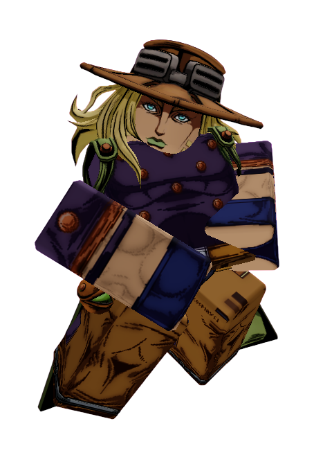

Lesson 5.
◆ ARCHIVE — MONITORED ◆
GYRO ZEPPELI
Status: SAFE
Archive Classification: MONITORED
Threat Level: MODERATE
MORALE LEVELS INCREASE WHEN PRESENT
Quote
"The shortest path isn't always a straight line."
Short Bio
Gyro Zeppeli is one of the most charismatic contestants in Anime Showdown Ultimax.
While many contestants struggle to stay positive, Gyro somehow finds a reason to smile even during the island's darkest moments.
Whether he's making terrible jokes, teaching someone something new, or reminding everyone to keep moving forward, Gyro has become one of Team 1's emotional pillars.
The Archive describes him as dangerous...
Not because of his strength.
Because people believe in him.
How They Arrived
Before ASU
Gyro had been traveling alongside Johnny Joestar during the Steel Ball Run.
After another exhausting day, he stepped away from camp to practice the Spin beneath the night sky.
As one of his Steel Balls returned to his hand...
Reality cracked. The stars disappeared. The world twisted around him.
Arrival
Gyro landed on the island laughing.
Not because he understood what had happened.
Because strange situations had always followed him.
Rather than panic, he immediately introduced himself to the strangers around him.
Some thought he was crazy. Others couldn't help but smile.
Personality
Gyro is energetic, confident, and incredibly compassionate.
He enjoys making jokes even when nobody laughs.
Beneath that humor lies someone who genuinely wants to see everyone around him become stronger.
Whether someone is scared, angry, or ready to give up...
Gyro always finds something encouraging to say.
Current Story
Gyro is one of the founding members of the Exit Team.
Although Joker leads the group, Gyro often keeps everyone focused whenever tensions begin to rise.
He believes there is always another path forward.
Even when escape seems impossible.
Many contestants don't realize it...
But without Gyro... the Exit Team might have fallen apart long ago.
Relationships
Allies
- Joker — One of Gyro's closest friends and the person he trusts most.
- David Martinez — Gyro constantly encourages David to believe in himself.
- Law — Although Law finds Gyro annoying, the two secretly work together extremely well.
- Gohan — Gyro sees Gohan as someone carrying too much responsibility and often reminds him to relax.
Rivals
- Musashi Miyamoto — Both warriors deeply respect each other's fighting styles.
Enemies
- The Host — Gyro refuses to let the Host take away everyone's hope.
Threat Assessment
Archive Classification:
EXIT TEAM MEMBER
Lore
Gyro became one of the first contestants Joker trusted.
Recovered Archive files show Gyro participating in nearly every major Exit Team discussion.
Unlike Joker, who focuses on solving mysteries...
Gyro focuses on protecting the people trying to solve them.
One deleted Archive note states:
"Hope spreads faster than fear."
The line appears to have been written by the Host himself.
Additional Notes
- Founding member of the Exit Team.
- Frequently teaches contestants the basics of the Spin.
- Has attempted to improve team morale after nearly every elimination.
- Known for making terrible jokes at the worst possible moments.
- One of the few contestants capable of calming arguments before they become fights.
- Archive staff have described Gyro as "dangerously inspiring."
If you're reading this... don't lose hope.
"Everyone needs someone like Gyro." — Joker
VOICE TRANSMISSION
Recovered Archive Recording